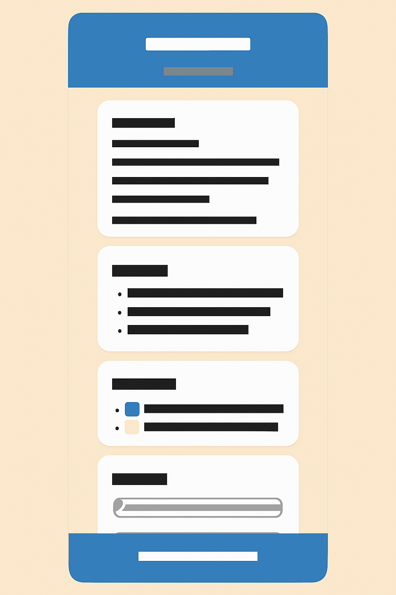
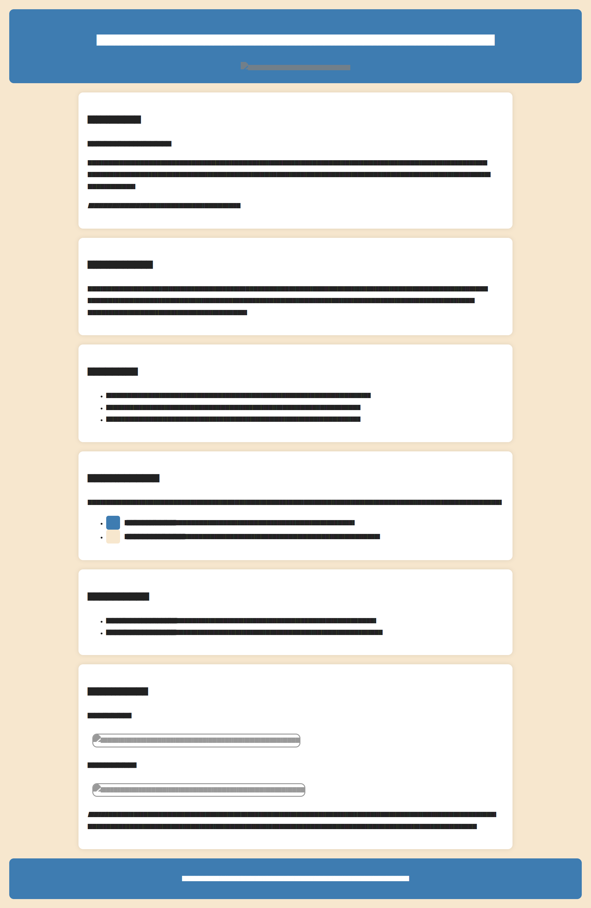

Religious Education Hub
This name was chosen because it reflects the central purpose of the website — to serve as a hub where learners can explore and understand teachings from various faith traditions and values. It emphasizes education, unity, and moral development.
Optional domain: religiouseducationhub.org
The purpose of this site is to provide accessible lessons, explanations, and activities that teach fundamental religious concepts and values. The site will include lessons, references, and interactive quizzes that help learners test their understanding and reflect on moral teachings.
The color palette will convey calmness, purity, and understanding — suitable for an educational and faith-based website.
Mobile View:
Desktop View:
Note: The wireframes show a welcoming hero section with a banner, short intro text, and navigation links to Teachings, References, and Quiz pages. The design adapts fluidly from stacked mobile layout to a horizontal desktop format.